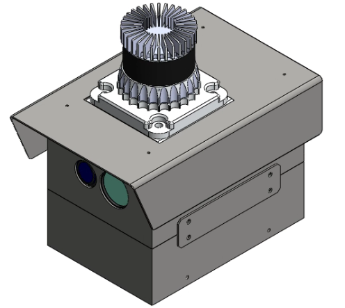
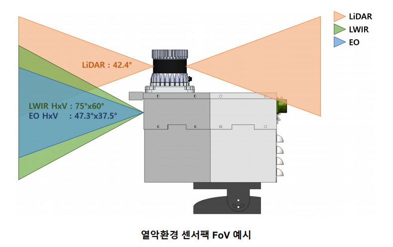

Heterogeneous Sensor Data Collection for High-Reliability Environments
2026 | ADD (국방과학연구소) | Researcher
연구 수행 기간 2026, 참여 기간 2026, 주관기관 국방과학연구소 (ADD)
Overview
군사용 자율차량의 인식 성능 개선을 위해, 강우, 강설, 먼지, 연막, 안개 등 열악환경에서 센서 데이터를 획득하는 장비를 구축한 연구입니다. 다중 센서(3D 라이다, IR/EO 카메라, 항법장치 등)를 동기화하여 데이터를 획득, 저장, 재생하는 하드웨어와 ROS2 기반 소프트웨어를 구축하고, 센서 간 캘리브레이션 기능까지 포함하여 딥러닝 모델 학습/검증용 데이터를 확보하는 것을 목표로 했습니다.
센서팩은 외부에 3D 라이다(OS1-128), 내부에 EO(G5-510C)/IR(TE-EV2) 카메라와 항법장치(CPT7)를 통합하고, 차양캡과 방열판 기반 패시브 방열로 직사광, 먼지, 수분 환경에서도 안정적으로 동작하도록 설계했습니다.

열악환경 센서팩 (3D LiDAR, EO/IR, 항법장치 통합)

센서별 화각(FoV) 구성 — LiDAR 42.4°, LWIR 75°×60°, EO 47.3°×37.5°
My Role
01 / 수집 시스템 아키텍처
3D 라이다(OS1-128), EO/IR 카메라, 항법장치(CPT7)를 단일 센서팩에 통합 설계
고신뢰성 요구 환경에서 안정적인 이종 센서 데이터 수집을 위한 정밀 동기화 아키텍처 구성
주요 사양 — 3D 라이다 OS1-128(128ch), EO/IR/항법 4종 동기 수집 / 센서팩 154×224×162 mm